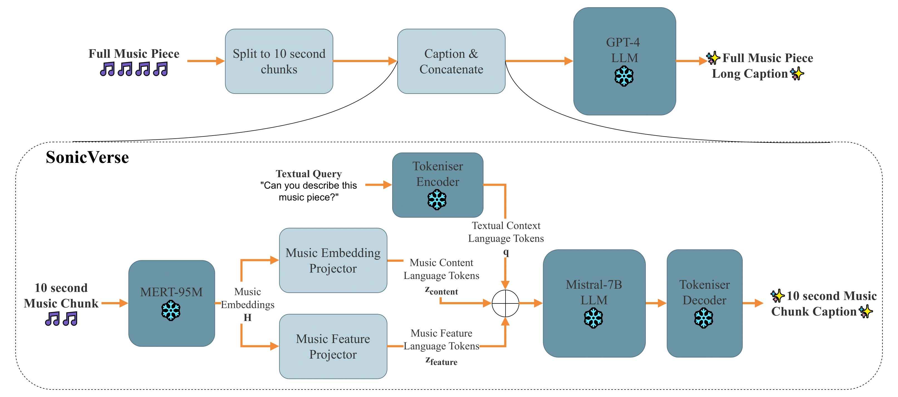

Welcome! This page showcases samples from the SonicVerse project. Two types of captioning samples are provided below, long audio (LLM chained captions) and short 10 second snippets.
Abstract: Detailed captions that accurately reflect the characteristics of a music piece can enrich music databases and drive forward research in music AI. This paper introduces a multi-task music captioning model, SonicVerse, that integrates caption generation with auxiliary music feature detection tasks such as key detection, vocals detection, and more, so as to directly capture both low-level acoustic details as well as high-level musical attributes. The key contribution is a projection-based architecture that transforms audio input into language tokens, while simultaneously detecting music features through dedicated auxiliary heads. The outputs of these heads are also projected into language tokens, to enhance the captioning input. This framework not only produces rich, descriptive captions for short music fragments but also directly enables the generation of detailed time-informed descriptions for longer music pieces, by chaining the outputs using a large-language model. To train the model, we extended the MusicBench dataset by annotating it with music features using MIRFLEX, a modular music feature extractor, resulting in paired audio, captions and music feature data. Experimental results show that incorporating features in this way improves the quality and detail of the generated captions.
Cite as: SonicVerse: Multi-Task Learning for Music Feature-Informed Captioning. arXiv:2506.15154. Accepted to AIMC 2025.
DOI: 10.48550/arXiv.2506.15154

Long Audio Sample 1
'"Bohemian Rhapsody" is a complex and multifaceted piece that takes listeners on a musical journey through various genres and moods. The song begins with a gospel music piece, featuring a choir of female vocalists singing harmoniously in a major key, with a beat of 2 and a tempo of 171.0 beats per minute. The chord progression in this initial phase is Bb, F, Bb, F.
As the song progresses, it transitions into a slow-tempo romantic song in the key of C major, with a steady drumming rhythm, a mellow bass line, and a piano accompaniment. The singer's soft voice adds an emotional, passionate, and sentimental touch to the song, which is further enhanced by the violin accompaniment and melody. The chord progression in this section is C, Bb, C, Bb, C, with a beat of 4 and a tempo marked as Andante.
The song then transitions into a blues song with a slow tempo and a bluesy electric guitar melody. The bass guitar plays the root notes of the chords, and a male voice sings in a higher key. The song is emotional and passionate, with a chord progression of Gm, D, Eb, Gm, D, Eb. The beat is 4, the key of this song is G minor, and the tempo is Andante.
The song then takes a turn into the realm of rock music, with a lively and energetic song featuring a fast tempo and a catchy tune. The male vocalists sing in unison, creating a harmonious and engaging melody. The song is filled with enthusiasm and passion, making it a perfect addition to any party or celebration. The beat is quick and lively, with a tempo of 170.0 beats per minute. The song is in the key of A minor.
The song then transitions into a lively and spirited acapella song sung by a male choir. The tempo is medium fast with a lively and cheerful atmosphere. The song is a mix of Indian and Western classical music with a strong Indian classical music influence.
The song then transitions into a rock song with a male vocalist singing melodically. The tempo is medium with a lively electric guitar harmony, keyboard accompaniment, punchy kick and snare hits, and a groovy bass line. The song is in the key of A# minor and has a chord progression of A#m7, C#m, A#m, C#m, A#m. The beat is 4 and the song is played at a pace of 120.0 beats per minute.
The song then transitions into a live performance of a hard rock/heavy metal piece. The electric guitar is playing a solo melody over the background of the acoustic drums and electric bass. The atmosphere is aggressive and energetic, making it perfect for a rock bar. The song is in the key of A# minor and has a beat of 2.
The song then transitions into a mellow and emotional soft rock song with a male vocalist singing melodically. The piano and electric guitar play the main melody while the bass guitar and acoustic drum beat provide a simple and slow rhythm. The song has a sentimental and melancholic feel, making it perfect for a romantic movie. The chord progression is Gm, C#, Gm, C#, Gm, C#, Gm, C#, and the tempo is 120.0 beats per minute.
The song concludes with a medium tempo instrumental with a loud, loud, loud, and loud crash of timpani. The sound of a marimba is heard in the background. The tempo of the song is 70.0 beats per minute. The chord progression is Eb, Bb. The beat is 2.
Overall, "Bohemian Rhapsody" is a musical masterpiece that seamlessly blends various genres and moods, taking listeners on an unforgettable musical journey.'
Long Audio Sample 2
'"The Kyoto Connection - Hachiko (The Faithful Dog)" is a deeply emotional and evocative instrumental piece, primarily featuring a piano with occasional accompaniment from a cello, violin, bass guitar, and a brass section. The song is performed live, adding a layer of authenticity and rawness to the performance.
The piece begins with a piano cover of a pop music piece, setting the tone with a melody in the key of C major. The piano carries the melody throughout the song, with a beat count of 2 and a tempo that fluctuates between 170.0 and 177.0 beats per minute. The chord progression alternates between sequences of C, G, C and C, F, C, F, adding depth and complexity to the melody.
At around the 30-second mark, a brass section joins in, playing a backing harmony that complements the piano's melody. This combination creates a soft, mellow, and soothing atmosphere. By the 40-second mark, a cello is introduced, playing a countermelody that enhances the emotional depth of the song.
As the song progresses, a bass guitar is added to provide a simple bassline, further enriching the song's texture. The atmosphere remains emotional and melancholic, with the dynamics of the piano playing contributing to the overall mood.
Around the 70-second mark, the song transitions into a slower tempo of 77.0 beats per minute and shifts to the key of D minor. The chord sequence changes to Dm, Am, Dm, G, Am, Dm, creating a more melancholic and emotional atmosphere. This shift in key and tempo continues until around the 90-second mark, where the song returns to the key of C major and a tempo of 177.0 beats per minute.
The song continues to evolve, with the piano playing a melancholic tune accompanied by a bass guitar. The atmosphere remains slow and solemn, with the song potentially fitting into the soundtrack of a drama movie during scenes of contemplation.
Around the 140-second mark, a gentle electric guitar melody is introduced, adding a new layer of complexity to the song. The song then transitions into the key of A minor, with a chord progression of Am, F, A, Dm, Am, F, A, Dm.
As the song approaches its conclusion, a clarinet and a trumpet are added to the mix, playing the main melody and a higher register melody respectively. The song then transitions back to the key of C major, with a chord progression of C, F, C, G, Am, C, and a tempo of 177.0 beats per minute.
Overall, "The Kyoto Connection - Hachiko (The Faithful Dog)" is a deeply emotional and evocative piece, with a rich and complex musical structure. Its slow tempo, melancholic atmosphere, and the masterful interplay of various instruments make it a standout piece, perfect for a drama movie soundtrack or for those who appreciate slow, emotional music that evokes a range of emotions.'
Long Audio Sample 3
'"12100_low" is a dynamic and multifaceted piece that spans various genres, predominantly heavy metal and hard rock, with a brief interlude into Spanish flamenco. The song begins with a passionate Spanish flamenco atmosphere, characterized by a guitar playing the main melody and a percussion instrument providing a flamenco beat, accompanied by an acoustic bass guitar. However, this description seems to be an outlier and does not fit with the rest of the song's descriptions.
The song quickly transitions into a lively instrumental piece with a fast tempo. The main melody is played by a harmonica, while the guitar and bass guitar provide a groovy background. The rhythm is set by a percussion instrument, and the song is played in the key of D major. The chord sequence is D, A, repeated throughout this section.
From 30 seconds onwards, the song morphs into a hard rock/metal piece with a male vocalist singing melodically. The tempo remains medium-fast, with a strong bass line, aggressive electric guitar, and loud acoustic drum beat. The atmosphere is energetic and aggressive, perfect for a rock bar. The song is in the key of D minor with a chord progression of Dm, A, repeated throughout this section.
The song continues in this vein, with the tempo increasing and the addition of a distorted electric guitar, keyboard harmony, and a fast metal drum beat. The atmosphere becomes more aggressive and violent, with the song being performed live. The key changes to F# major, with a chord progression of F#, Eb.
At 70 seconds, the song transitions into a fast-paced instrumental metal piece with a complex and aggressive sound. The main melody is played by the electric guitar, while the bass guitar provides a steady background. The acoustic drums play a fast-paced beat with a lot of cymbal crashes. The chord progression is Dm7b5/A, D7, A, and the song is in the key of D minor.
The song continues in this aggressive, high-energy vein, with the main melody played by the distorted electric guitar, and the bass guitar providing a steady background. The acoustic drums play a fast-paced beat with a lot of cymbal crashes. The chord progression is D, A, D, A, and the beat is 4. The song is in the key of D major and has a tempo of 170.0 beats per minute.
At 130 seconds, the song transitions into a heavy metal/thrash metal piece with a fast-paced electric guitar melody with a distortion sound. The bass guitar is playing the same melody as the electric guitar. The acoustic drums are playing a fast-paced metal beat. The atmosphere is aggressive and violent. The chord progression is A, D, A, D, A, D, A, D, A, D, A, D, A, D, A, D, A, D, A, D, A, D, A, D, A, D, A, D, A, D, A.
The song concludes with an upbeat melody perfect for a video game soundtrack, with a fast tempo and a catchy melody played by the keyboard. The bass guitar provides a solid foundation, while the drums keep the beat with a simple yet effective rhythm. The song is in the key of A minor, with a chord progression of A, D, and Eb. The beat is a steady 2, making it easy to dance to.
Overall, "12100_low" is a complex and energetic song that transitions through various genres and moods, making it a versatile piece suitable for a variety of settings, from rock bars to video game soundtracks.'